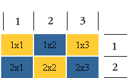

Главная | Оглавление | Словарь
Итак, как помнится мы решили с вами создать вот такую таблицу:

А получилось у нас еще только вот такая таблица:

В чем же дело? А в том, что мы не задали высоту и ширину ячейкам таблицы нашей:) Вспомним о параметрах height и width - вы можете их задать для всей таблицы, для одного ряда, для ячейки (столбца). Вспомним, что высота и ширина могут задаваться как в пикселях, так и процентах. В нашем случае мы зададим ширину и высоту в пикселях для столбцов (ячеек).
<table><tr>
<td height="35" width="50" bgcolor="#FFCC33"> 1x1 </td>
<td width="50" bgcolor="#336699"> 1x2 </td>
<td width="50" bgcolor="#FFCC33"> 1x3 </td>
</tr>
<tr>
<td height="35" width="50" bgcolor="#336699"> 2x1 </td>
<td width="50" bgcolor="#FFCC33"> 2x2 </td>
<td width="50" bgcolor="#336699"> 2x3 </td>
</tr>
</table>
Сразу предвижу вопрос: - А почему высота задана только для двух ячеек (столбцов), а ширина для всех? Все очень просто: Если в ряду вы задаете для какого-либо столбца (ячейки) высоту большую, чем для других то, не смотря на это, все ячейки (столбцы) вашего ряда станут по высоте равны наибольшей:) вот так-то. Тоже самое с рядами, если вы зададите для какого-то ряда наибольшую длинну, то все остальные ряды выровняются по этому наибольшему ряду (помните ряд - это не ячейка, поэтому я задала в нашем примере ширину для каждой ячейки (столбца)).
Вы можете задать высоту и ширину для всей таблицы, тогда все ячейки (столбцы) и ряды поделят данное им пространство поровну, если не задавать им это пространство персонально (в процентах от общей ширины (высоты) таблицы или пикселях).
Вернемся к нашему примеру: теперь мы почти получили то, что хотели:)
Теперь нам осталось лишь выровнять содержимое внутри таблицы:
<tr>
<td height="35" width="50" bgcolor="#FFCC33"> <center> 1x1 </center> </td>
<td width="50" bgcolor="#336699"> <center> 1x2 </center> </td>
<td width="50" bgcolor="#FFCC33"> <center>1x3 </center> </td>
</tr>
<tr>
<td height="35" width="50" bgcolor="#336699"> <center> 2x1 </center> </td>
<td width="50" bgcolor="#FFCC33"> <center> 2x2 </center> </td>
<td width="50" bgcolor="#336699"> <center> 2x3 </center> </td>
</tr>
</table>
И... готово!:)
В каждой ячейке (столбце) могут находится и картинки, и текст, и даже таблицы (в этом случае они называются - вложенные таблицы). И тэги, которые мы применяем для форматирования текста - все те же.
Поскольку содержимое каждой ячейки как бы обстановка отдельной комнаты, то и тэги для центрирования текста пришлось прописать в нашем примере в каждой ячейке.
Давайте шагнем на следующую ступеньку и продолжим разговор о таблицах.